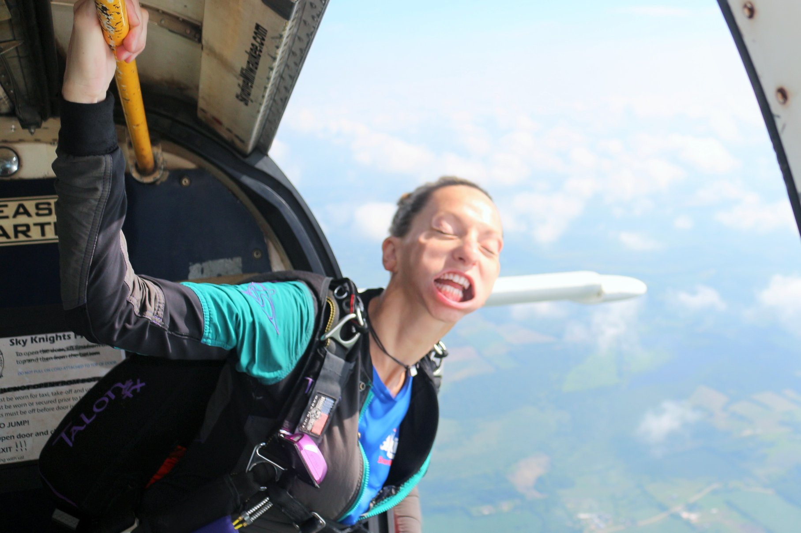

About Me

Born in Bishop, CA to a couple of hippy rock climbers, my childhood was spent exploring the natural world. I have carried my love for the outdoors into my adult life and my passion for adventure is unquenchable. I attended Northern Arizona University in Flagstaff and graduated Suma Cum Laude in 2012. Shortly after graduation, I began my real-world education by travelling to different countries and immersing myself into languages and cultures far different than my own. Not unlike a boomerang, after years flying in my own trajectory, I finally returned home to Arizona.
I currently work at Skydive Arizona as the Marketing and Events Coordinator. I am also a free-fall instructor. I love what I do, and I hope to spend many years teaching students how to stay safe in free-fall. While I am an adventure seeker and an adrenaline junkie, I am also a life-long learner. I am currently taking a full-stack coding course in order to better understand the technology in the world around me. I hope this new knowledge will expose me to new and different opportunities and potentially a new career path.